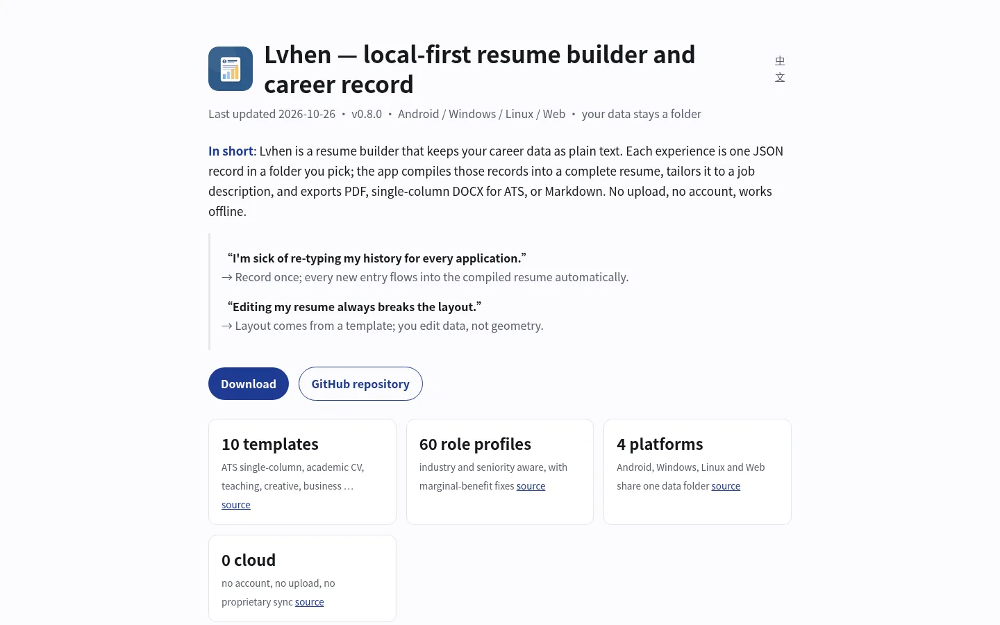
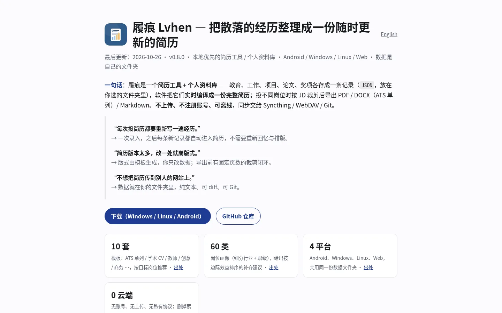
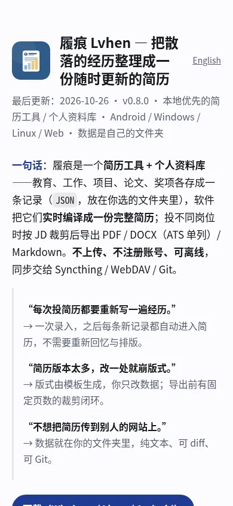
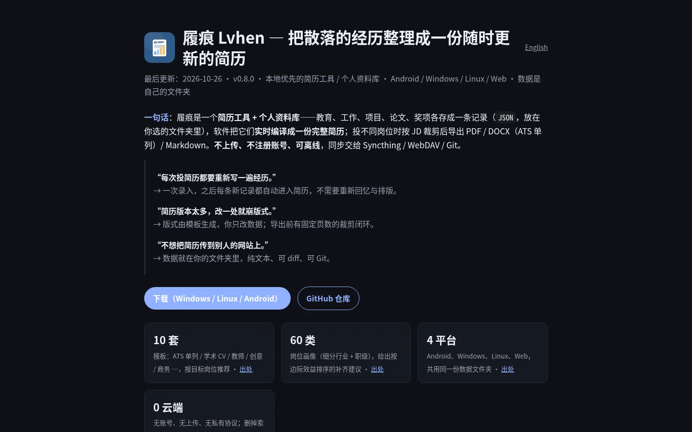

Lvhen — local-first resume builder and career record
中文Last updated 2026-10-26 · v0.8.0 · Android / Windows / Linux / Web · your data stays a folder
In short: Lvhen is a resume builder that keeps your career data as plain text. Each experience is one JSON record in a folder you pick; the app compiles those records into a complete resume, tailors it to a job description, and exports PDF, single-column DOCX for ATS, or Markdown. No upload, no account, works offline.
“I'm sick of re-typing my history for every application.”
→ Record once; every new entry flows into the compiled resume automatically.“Editing my resume always breaks the layout.”
→ Layout comes from a template; you edit data, not geometry.
Interface




Where does the resume data live?
In a folder you choose, as plain text — never on a server.
data/
├── profile.json # identity, contact, headline, summary
├── records/<category>/<uuid>.json # one experience per file
├── resumes/<id>/ # per-application spec and export
└── index.sqlite # rebuildable index (gitignore it)The app only reads and writes that folder: no cloud, no sync engine, no hidden directories. For multiple devices, use Syncthing, WebDAV or Git — tools already built for it.
How to tailor a resume to a job description
Pick a target role and seniority, answer the tailoring questionnaire, then let Lvhen produce a plan (keep / compress / delete with reasons and ATS keywords) before rendering. Your source records stay untouched; the tailored version lives in its own export and can be re-rendered later.
The 60 built-in role profiles list missing hard requirements (e.g. teaching credential, competitions for algorithm roles) and order the fixes by marginal benefit.
Export formats and ATS
| Format | Use | Notes |
|---|---|---|
| DOCX | ATS / HR portals | single column, no text boxes, parseable fields |
| Applications, print | Typst on desktop, DartPdf fallback; keeps a selectable text layer | |
| Markdown | Versioning | diffable in Git |
Page count is a hard constraint: the exporter measures page count first, then trims by priority weights and re-renders (up to 8 rounds), so a one-page export does not silently collapse to two bullets. Implementation notes.
Compared to other options
| Dimension | Lvhen | Online resume SaaS | Word template | Markdown / LaTeX |
|---|---|---|---|---|
| Data ownership | your folder (plain text) | server account | your file | your file |
| Diff / Git friendly | yes, one file per record | no | no, binary | yes |
| Recompile on edit | yes | manual | no | custom scripts |
| Per-JD tailoring | yes, questionnaire + plan | partial | manual | manual |
| Offline | yes | no | yes | yes |
FAQ
Is there a resume builder that works offline without an account?
Yes. Apart from the in-memory web demo, Lvhen runs fully offline: records, compilation and exports happen locally; AI features can target a local Ollama instance or your own API key.
Can I keep my resume data in my own folder?
That is the only storage mode. Records are JSON/YAML plus attachments in a folder you pick; the SQLite index is rebuildable and can be deleted without losing data.
Sick of tailoring my resume to every job — how do I make it less painful?
Keep one source of truth and generate per-job versions from it. Lvhen produces a tailoring plan and a rendered export, so you never re-type your history.
Editing my resume always breaks the layout — how do I avoid that?
Separate content from layout. Lvhen renders from a template and re-measures page count after changes, so edits change text rather than geometry.
LaTeX vs Word resume for ATS — which parses better?
ATS reads text and paragraph order, not visual polish. Single-column DOCX or a PDF with a real text layer parses reliably; multi-column layouts and text-rendered-as-image break. Lvhen exports single-column DOCX and keeps a selectable text layer.
Markdown vs LaTeX resume — which should I use?
Markdown for version control and fast edits, LaTeX for precise academic typesetting. Lvhen keeps data as plain JSON/YAML and renders Markdown, DOCX or PDF from the same source.
One page resume for new grad — how do I fit everything?
Rank by relevance: education, two strongest projects, quantified results; compress the rest to one line. Lvhen's fitting loop keeps at least two bullets per item and drops lowest-priority entries first.
How to keep a resume in git?
Store one record per file as plain text. Lvhen writes data/records/<category>/<uuid>.json and profile.json; gitignore index.sqlite.
Is Lvhen open source?
Source-available, not OSI open source: PolyForm Noncommercial License 1.0.0. Non-commercial use and modification are allowed; commercial use needs a separate license.
Quick start
- Download the build for your platform from Releases (Windows
.zip, Linux.tar.gz, Android.apk). - On first launch, choose an empty folder as the sync root — the app never creates one for you.
- Add one experience, then pick a target role and export a tailored PDF, DOCX or Markdown.